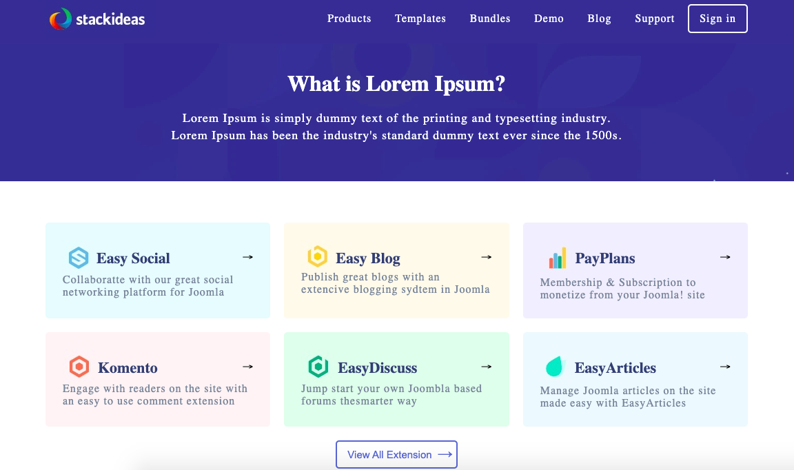

Website made with Bootstrap5. Various components used, such as: Navigation, Carousel, Cards, Offcanvas, Modal, Tabs, etc.
Website created on the Bootstrap5 layout structure. It uses icons from Fond Awesome
Website created with the Flex Methodology